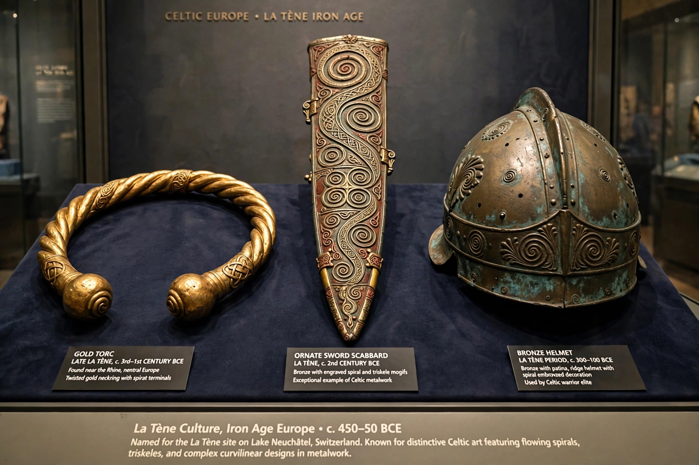

| La Tène culture | |
|---|---|
| Period | c. 450 BCE – 1st century BCE |
| Region | Central and Western Europe |
| Type site | La Tène, Lake Neuchâtel, Switzerland |
| Preceded by | Hallstatt culture |
| Associated with | Celts |

The La Tène culture was a European Iron Age culture that flourished from about 450 BCE until the Roman conquest in the 1st century BCE. Named after the type site at La Tène on Lake Neuchâtel in Switzerland, excavated from 1857 onward, it developed out of the earlier Hallstatt culture and is widely associated with the Celts.
At its height the La Tène culture spanned a huge arc of Europe, from Ireland and northern Spain through France, Germany, and the Alpine region to Bohemia, the middle Danube, and — through Celtic migrations — into Galatia in Anatolia. Archaeologists divide it into early, middle, and late phases, marked by changes in burial rite, settlement form, and art style. From the late 2nd century BCE, large fortified settlements called oppida became the centres of tribal territories.
La Tène art is celebrated for its fluent curvilinear designs — spirals, triskeles, and stylised plant and animal forms — worked in gold torcs, bronze helmets and shields, decorated sword scabbards, and brooches. The culture also saw the spread of the potter's wheel, rotary querns, and eventually Celtic coinage imitating Greek and Macedonian prototypes. Burials of the early phase include rich chariot graves, such as the Hochdorf burial under the Hallstatt-La Tène transition.
Classical authors describe the La Tène Celts as tribal societies of aristocratic warriors, farmers, and druidic religious specialists, famous as mercenaries and feared for raids such as the sack of Rome (c. 390 BCE). Roman expansion in the Gallic Wars and Germanic pressure from the north brought the culture to an end on the continent, though La Tène traditions persisted in Ireland and parts of Britain beyond Roman reach, continuing to shape the Celtic languages region.
Celts · Hallstatt culture · Gallic Wars · Oppidum · Celtic languages